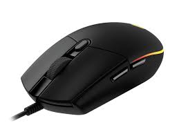

เมาส์
เป็นอุปกรณ์รับเข้า ที่ช่วยให้การ
ใช้งาน
ง่ายขึ้นด้วยการ
ใช้เมาส์
เลื่อนตัวชี้ไปยังตำแหน่งต่าง ๆ บนจอภาพ ในขณะที่สายตาจับอยู่ที่จอภาพก็สามารถ
ใช้
มือลาก
เมาส์
ไปมาได้ ระยะทางและทิศทางของตัวชี้จะสัมพันธ์และเป็นไปในแนวทางเดียวกับการเลื่อน
เมาส์
